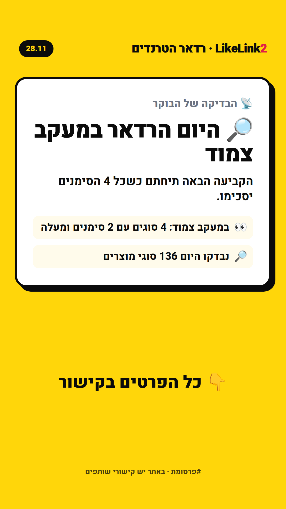

📡 הסטורי של הרדאר להיום

⬇️ שמירת התמונה
הקישור לסטיקר
טקסט הסטיקר: לרדאר
איך מפרסמים
- שומרים את התמונה לטלפון (לחיצה ארוכה → שמירה).
- באינסטגרם: + → סטורי → בוחרים את התמונה.
- סטיקר → קישור → מדביקים את הקישור, ובטקסט כותבים: לרדאר.
- מניחים את הסטיקר מתחת ל״כל הפרטים בקישור״ ומפרסמים.
- אחרי הפרסום: ⋯ → הוספה להיילייט ״רדאר״.